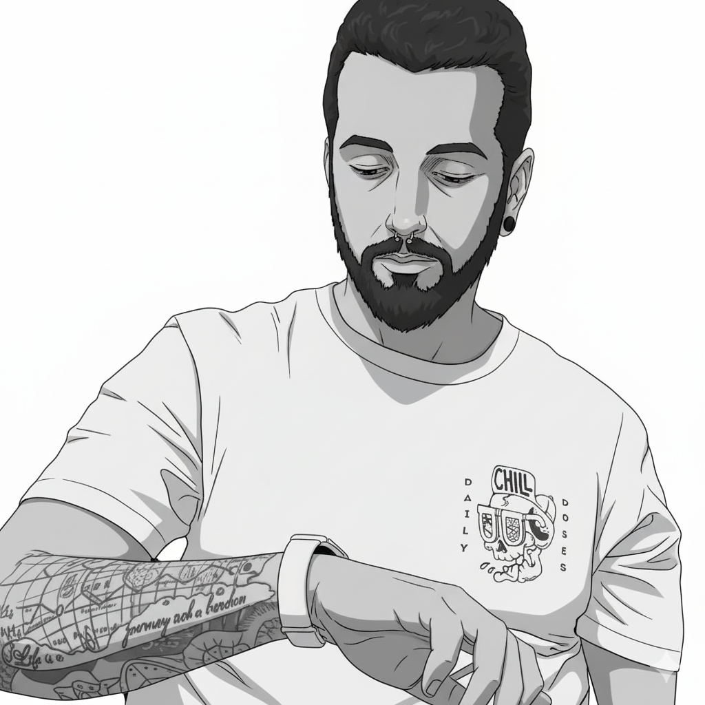
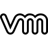
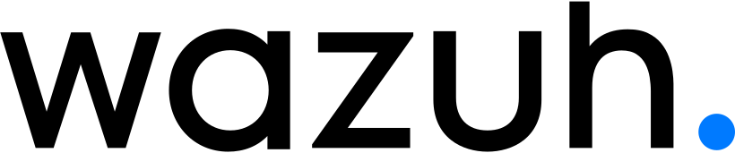

מתן ג'מיל System Administrator & Security Engineer
אני עובד ביום-יום עם שרתי Windows, Active Directory, Microsoft 365, רשתות וכלי אבטחה. העבודה כוללת הקמה, תחזוקה, הקשחה, תיעוד ואוטומציה של משימות שחוזרות על עצמן. בפרויקטים אני מתחיל ממיפוי המצב הקיים ומתקדם בשינויים מדודים שאפשר לבדוק ולתחזק.

 Azure
Azure
VMware
Wazuhעליי בקצרה
SysAdmin ו‑Security Engineer עם מעל 4 שנות ניסיון בסביבה הארגונית. מתמחה בהקמה, תחזוקה והקשחה של מערכות Windows Server (מ‑2008 ועד 2022), תוך ניהול Active Directory, GPO, DNS, DHCP ו‑Baseline מאובטח. מנהל שרתי הדפסה ארגוניים ופריסת מדפסות לפי מחלקות דרך GPO.
אני עובד בגישה פרואקטיבית שממוקדת במדדים אמיתיים: זמינות שירות, זמן תגובה ותיעוד מתמשך. בשנים האחרונות שדרגתי תשתית רשת מקישוריות של כ־32Mbps ל־300/300Mbps, לצד שדרוג נקודות גישה ובדיקות כיסוי אלחוטי; וחיזקתי יציבות שרתים באמצעות תחזוקה, ניטור והקשחת תשתיות, תוך הטמעת תהליכי בקרה שמאפשרים טיפול מהיר יותר בתקלות.
בנוסף, מתמחה בהרכבת מחשבים לפי דרישות משתמש קצה - אפיון, בחירת חלקים, איזון תקציב/ביצועים, בדיקות מאמץ וכיול תרמי. מעל 350 מחשבים שהורכבו בעבודתי, עם תיעוד ובדיקות עומס מלאות.
תחומי מומחיות
- PowerShell Automation - פריסות, הקשחות, Health Checks, ניהול Outlook Archives ו‑ACLs
- Active Directory / Group Policy / DNS / DHCP - OU לפי מחלקות, Baseline קשיח, מדיניות אבטחה
- Microsoft 365 & Entra ID - ניהול, הקמה והגדרת משתמשים, רישוי והרשאות, סנכרון עם AD
- Print Servers - ניהול שרתי הדפסה ופריסת מדפסות דרך GPO לפי מחלקות
- SecOps & SIEM - Splunk, Wazuh, CrowdStrike, נראות ובקרה
- Virtualization - Proxmox, VMware, VLAN Segmentation, מעבדות Red/Blue/Purple
- Hardware & PC Builds - BIOS/UEFI, XMP/EXPO, ולידציה תרמית
Cyber Labs & Hands‑On Experience
- TryHackMe - חדרים: Linux Privilege Escalation, Blue/Red Team, Network Exploitation
- כלים: Metasploit, Nikto, dirb, Nmap, Burp Suite
- הקמה וניהול מעבדות Red/Blue/Purple לצורכי אימון ו‑PT.
פילוסופיית עבודה
IT הוא מערכת חיה: אם היא לא נמדדת - היא לא מנוהלת.
חשוב לי שהאחריות על התהליך תהיה ברורה, שהתיעוד יישאר שימושי גם אחרי המסירה, ושאוטומציה תפתור עבודה חוזרת במקום להוסיף מורכבות.
משימה שחוזרת על עצמה היא מקום טוב לבדוק אם אוטומציה באמת תעזור.
נתונים מהירים
שנות ניסיון ארגוני
Mbps אחרי שדרוג תשתית רשת
מחשבים שהורכבו לפי דרישת משתמש
בסביבות ותשתיות מנוהלות
יצירת קשר
פתוח לשיתופי פעולה, פרויקטים ותפקידים שמשלבים אבטחה, תשתיות ואוטומציה.